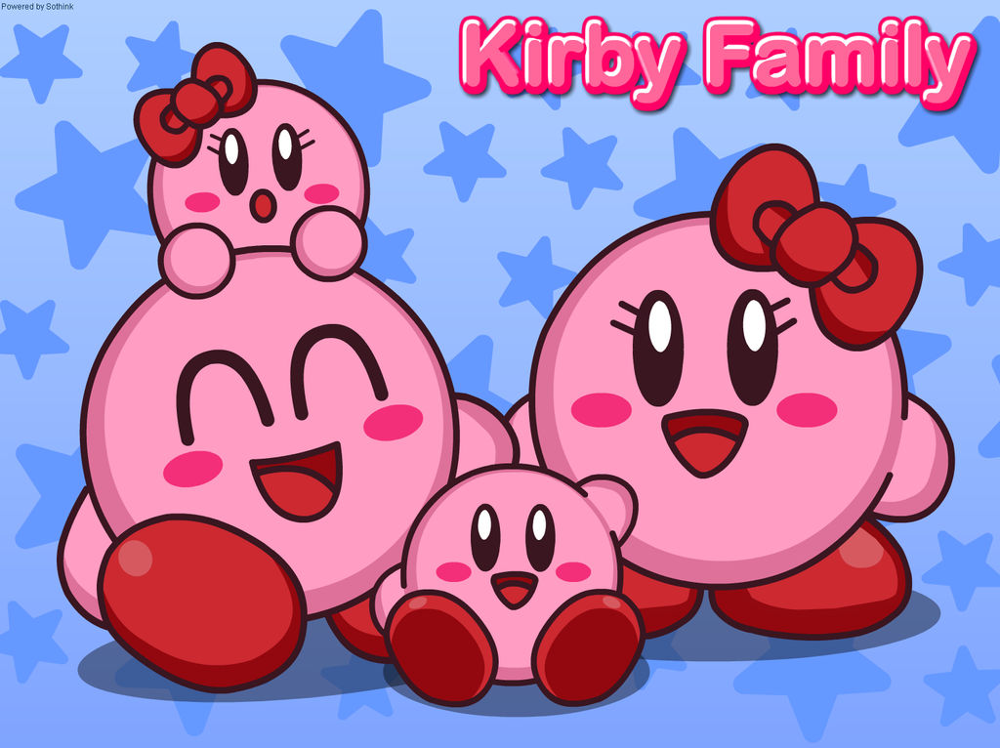

Bubbles came from a close-knit family of pink animals, who loved them deeply but sometimes struggled to understand Bubbles' desire to explore their own identity. Bubbles' parents were a pair of round, pink creatures with gentle eyes and kind hearts, who had always encouraged their children to be themselves. But even they had a hard time grasping the idea of non-binary gender identity, and sometimes stumbled over pronouns or inadvertently said the wrong thing.
Despite these challenges, Bubbles loved their family and knew that their parents always had their best interests at heart. They had grown up surrounded by siblings - a younger brother and an older sister - who were protective and affectionate. Bubbles' siblings didn't always understand their desire to explore their identity, but they loved them just the same.
One day, Bubbles made the decision to set out on a journey of self-discovery, determined to uncover their true identity. They left behind the safety of their familiar surroundings and ventured out into the unknown, heart beating with equal parts excitement and trepidation.
